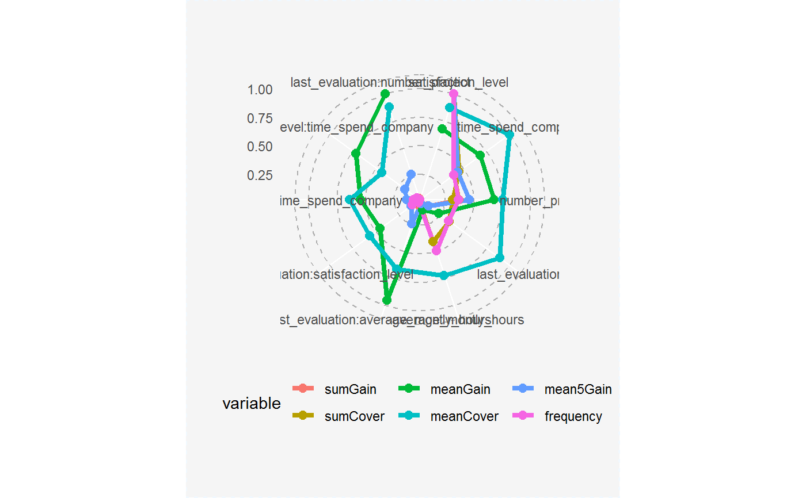
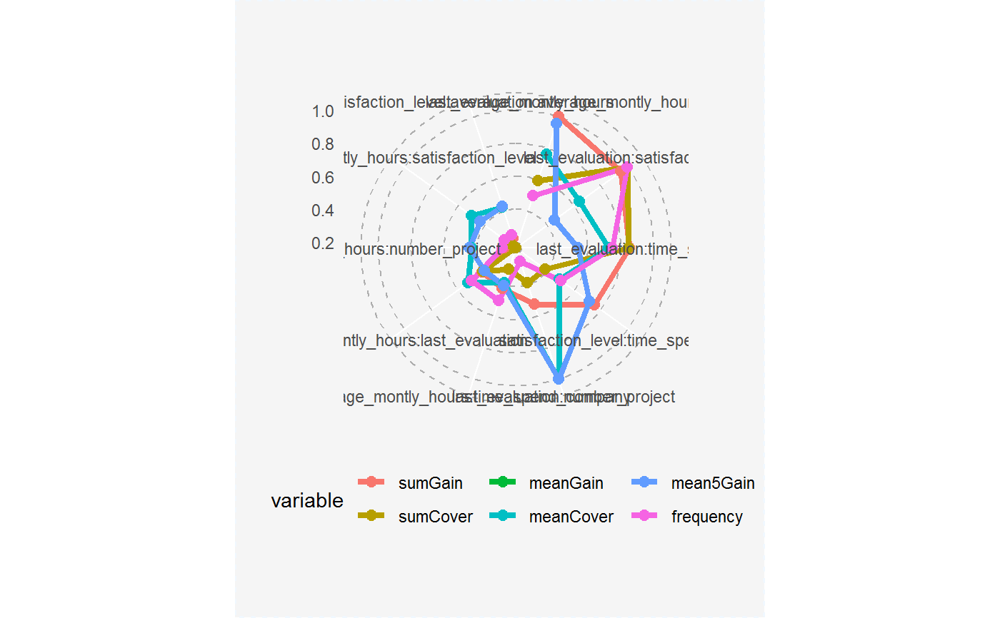
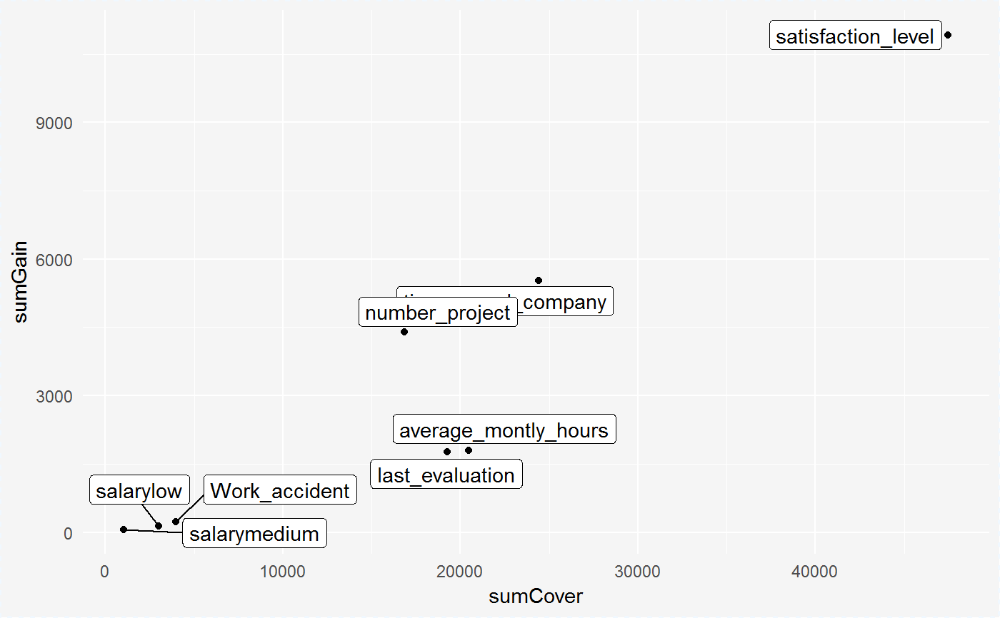

Plot importance measures
This functions plots selected measures of importance for variables and interactions. It is possible to visualise importance table in two ways: radar plot with six measures and scatter plot with two choosen measures.
# S3 method for importanceTable plot(x, ..., top = 10, radar = TRUE, xmeasure = "sumCover", ymeasure = "sumGain")
Arguments
| x | a result from the `importanceTable` function. |
|---|---|
| ... | other parameters. |
| top | number of positions on the plot or NULL for all variable. Default 10. |
| radar | TRUE/FALSE. If TRUE the plot shows six measures of variables' or interactions' importance in the model. If FALSE the plot containing two chosen measures of variables' or interactions' importance in the model. |
| xmeasure | measure on the x-axis.Available for `radar=FALSE`. Default "sumCover". |
| ymeasure | measure on the y-axis. Available for `radar=FALSE`. Default "sumGain". |
Value
a ggplot object
Details
Available measures:
"sumGain" - sum of Gain value in all nodes, in which given variable occurs,
"sumCover" - sum of Cover value in all nodes, in which given variable occurs; for LightGBM models: number of observation, which pass through the node,
"mean5Gain" - mean gain from 5 occurrences of given variable with the highest gain,
"meanGain" - mean Gain value in all nodes, in which given variable occurs,
"meanCover" - mean Cover value in all nodes, in which given variable occurs; for LightGBM models: mean number of observation, which pass through the node,
"freqency" - number of occurrences in the nodes for given variable.
Additionally for plots with single variables:
"meanDepth" - mean depth weighted by gain,
"numberOfRoots" - number of occurrences in the root,
"weightedRoot" - mean number of occurrences in the root, which is weighted by gain.
Examples
library("EIX") library("Matrix") sm <- sparse.model.matrix(left ~ . - 1, data = HR_data) library("xgboost") param <- list(objective = "binary:logistic", max_depth = 2) xgb.model <- xgboost(sm, params = param, label = HR_data[, left] == 1, nrounds = 50)#> [1] train-error:0.150077 #> [2] train-error:0.098007 #> [3] train-error:0.098007 #> [4] train-error:0.098007 #> [5] train-error:0.098007 #> [6] train-error:0.098007 #> [7] train-error:0.098007 #> [8] train-error:0.095873 #> [9] train-error:0.095873 #> [10] train-error:0.095606 #> [11] train-error:0.095473 #> [12] train-error:0.093406 #> [13] train-error:0.061271 #> [14] train-error:0.059404 #> [15] train-error:0.055137 #> [16] train-error:0.063271 #> [17] train-error:0.043070 #> [18] train-error:0.042670 #> [19] train-error:0.039203 #> [20] train-error:0.038536 #> [21] train-error:0.037669 #> [22] train-error:0.037869 #> [23] train-error:0.036802 #> [24] train-error:0.037336 #> [25] train-error:0.036602 #> [26] train-error:0.036402 #> [27] train-error:0.036669 #> [28] train-error:0.035802 #> [29] train-error:0.035402 #> [30] train-error:0.032202 #> [31] train-error:0.031869 #> [32] train-error:0.031469 #> [33] train-error:0.030935 #> [34] train-error:0.030602 #> [35] train-error:0.030269 #> [36] train-error:0.029402 #> [37] train-error:0.029269 #> [38] train-error:0.028802 #> [39] train-error:0.028802 #> [40] train-error:0.028535 #> [41] train-error:0.028269 #> [42] train-error:0.028202 #> [43] train-error:0.027935 #> [44] train-error:0.027669 #> [45] train-error:0.027669 #> [46] train-error:0.027402 #> [47] train-error:0.028269 #> [48] train-error:0.027268 #> [49] train-error:0.026668 #> [50] train-error:0.026335#> Feature sumGain sumCover meanGain #> 1: satisfaction_level 10040.00 43920.0 264.10 #> 2: time_spend_company 4016.00 19820.0 267.70 #> 3: number_project 3706.00 13940.0 264.70 #> 4: last_evaluation 1181.00 15340.0 90.81 #> 5: average_montly_hours 886.00 18190.0 46.63 #> 6: last_evaluation:average_montly_hours 745.60 1767.0 372.80 #> 7: last_evaluation:satisfaction_level 708.90 2985.0 177.20 #> 8: last_evaluation:time_spend_company 635.00 2535.0 211.70 #> 9: satisfaction_level:time_spend_company 560.00 1144.0 280.00 #> 10: last_evaluation:number_project 390.20 1163.0 390.20 #> 11: average_montly_hours:time_spend_company 318.00 906.5 159.00 #> 12: average_montly_hours:last_evaluation 312.10 1224.0 156.10 #> 13: Work_accident 231.20 3972.0 57.81 #> 14: average_montly_hours:number_project 174.20 504.9 174.20 #> 15: average_montly_hours:satisfaction_level 169.90 575.8 169.90 #> 16: satisfaction_level:average_montly_hours 168.40 496.0 168.40 #> 17: salarylow 132.40 3015.0 44.13 #> 18: satisfaction_level:last_evaluation 131.80 584.4 131.80 #> 19: time_spend_company:last_evaluation 112.10 1342.0 56.03 #> 20: satisfaction_level:number_project 87.10 1096.0 87.10 #> 21: salarymedium 45.28 709.2 45.28 #> 22: time_spend_company:number_project 39.78 136.9 39.78 #> 23: number_project:last_evaluation 19.03 776.2 19.03 #> 24: salarylow:salarymedium 14.39 337.7 14.39 #> Feature sumGain sumCover meanGain #> meanCover frequency mean5Gain #> 1: 1156.0 38 1513.00 #> 2: 1321.0 15 670.40 #> 3: 995.6 14 697.40 #> 4: 1180.0 13 183.00 #> 5: 957.6 19 97.50 #> 6: 883.7 2 372.80 #> 7: 746.2 4 177.20 #> 8: 845.0 3 211.70 #> 9: 571.9 2 280.00 #> 10: 1163.0 1 390.20 #> 11: 453.2 2 159.00 #> 12: 612.2 2 156.10 #> 13: 992.9 4 57.81 #> 14: 504.9 1 174.20 #> 15: 575.8 1 169.90 #> 16: 496.0 1 168.40 #> 17: 1005.0 3 44.13 #> 18: 584.4 1 131.80 #> 19: 671.2 2 56.03 #> 20: 1096.0 1 87.10 #> 21: 709.2 1 45.28 #> 22: 136.9 1 39.78 #> 23: 776.2 1 19.03 #> 24: 337.7 1 14.39 #> meanCover frequency mean5Gain#> Feature numberOfRoots weightedRoot meanDepth sumGain sumCover #> 1: satisfaction_level 16 12.3800 0.21160 10920.00 47480 #> 2: time_spend_company 5 0.2425 0.90240 5529.00 24410 #> 3: number_project 2 0.0088 0.98880 4398.00 16840 #> 4: average_montly_hours 11 0.5522 0.68970 1800.00 20460 #> 5: last_evaluation 11 1.0370 0.40280 1756.00 19270 #> 6: Work_accident 3 0.0592 0.05031 231.20 3972 #> 7: salarylow 2 0.0186 0.21850 132.40 3015 #> 8: salarymedium 0 0.0000 1.00000 59.67 1047 #> meanGain meanCover frequency mean5Gain #> 1: 253.90 1104.0 43 1513.00 #> 2: 251.30 1109.0 22 751.50 #> 3: 244.30 935.5 18 721.70 #> 4: 81.82 929.9 22 241.70 #> 5: 92.40 1014.0 19 209.80 #> 6: 57.81 992.9 4 57.81 #> 7: 44.13 1005.0 3 44.13 #> 8: 29.84 523.4 2 29.84#> Feature sumGain sumCover meanGain meanCover #> 1: last_evaluation:average_montly_hours 745.60 1767.0 372.80 883.7 #> 2: last_evaluation:satisfaction_level 708.90 2985.0 177.20 746.2 #> 3: last_evaluation:time_spend_company 635.00 2535.0 211.70 845.0 #> 4: satisfaction_level:time_spend_company 560.00 1144.0 280.00 571.9 #> 5: last_evaluation:number_project 390.20 1163.0 390.20 1163.0 #> 6: average_montly_hours:time_spend_company 318.00 906.5 159.00 453.2 #> 7: average_montly_hours:last_evaluation 312.10 1224.0 156.10 612.2 #> 8: average_montly_hours:number_project 174.20 504.9 174.20 504.9 #> 9: average_montly_hours:satisfaction_level 169.90 575.8 169.90 575.8 #> 10: satisfaction_level:average_montly_hours 168.40 496.0 168.40 496.0 #> 11: satisfaction_level:last_evaluation 131.80 584.4 131.80 584.4 #> 12: time_spend_company:last_evaluation 112.10 1342.0 56.03 671.2 #> 13: satisfaction_level:number_project 87.10 1096.0 87.10 1096.0 #> 14: time_spend_company:number_project 39.78 136.9 39.78 136.9 #> 15: number_project:last_evaluation 19.03 776.2 19.03 776.2 #> 16: salarylow:salarymedium 14.39 337.7 14.39 337.7 #> frequency mean5Gain #> 1: 2 372.80 #> 2: 4 177.20 #> 3: 3 211.70 #> 4: 2 280.00 #> 5: 1 390.20 #> 6: 2 159.00 #> 7: 2 156.10 #> 8: 1 174.20 #> 9: 1 169.90 #> 10: 1 168.40 #> 11: 1 131.80 #> 12: 2 56.03 #> 13: 1 87.10 #> 14: 1 39.78 #> 15: 1 19.03 #> 16: 1 14.39#> Feature numberOfRoots weightedRoot meanDepth sumGain sumCover #> 1: satisfaction_level 16 12.3800 0.21160 10920.00 47480 #> 2: time_spend_company 5 0.2425 0.90240 5529.00 24410 #> 3: number_project 2 0.0088 0.98880 4398.00 16840 #> 4: average_montly_hours 11 0.5522 0.68970 1800.00 20460 #> 5: last_evaluation 11 1.0370 0.40280 1756.00 19270 #> 6: Work_accident 3 0.0592 0.05031 231.20 3972 #> 7: salarylow 2 0.0186 0.21850 132.40 3015 #> 8: salarymedium 0 0.0000 1.00000 59.67 1047 #> meanGain meanCover frequency mean5Gain #> 1: 253.90 1104.0 43 1513.00 #> 2: 251.30 1109.0 22 751.50 #> 3: 244.30 935.5 18 721.70 #> 4: 81.82 929.9 22 241.70 #> 5: 92.40 1014.0 19 209.80 #> 6: 57.81 992.9 4 57.81 #> 7: 44.13 1005.0 3 44.13 #> 8: 29.84 523.4 2 29.84